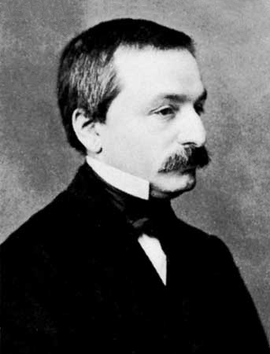
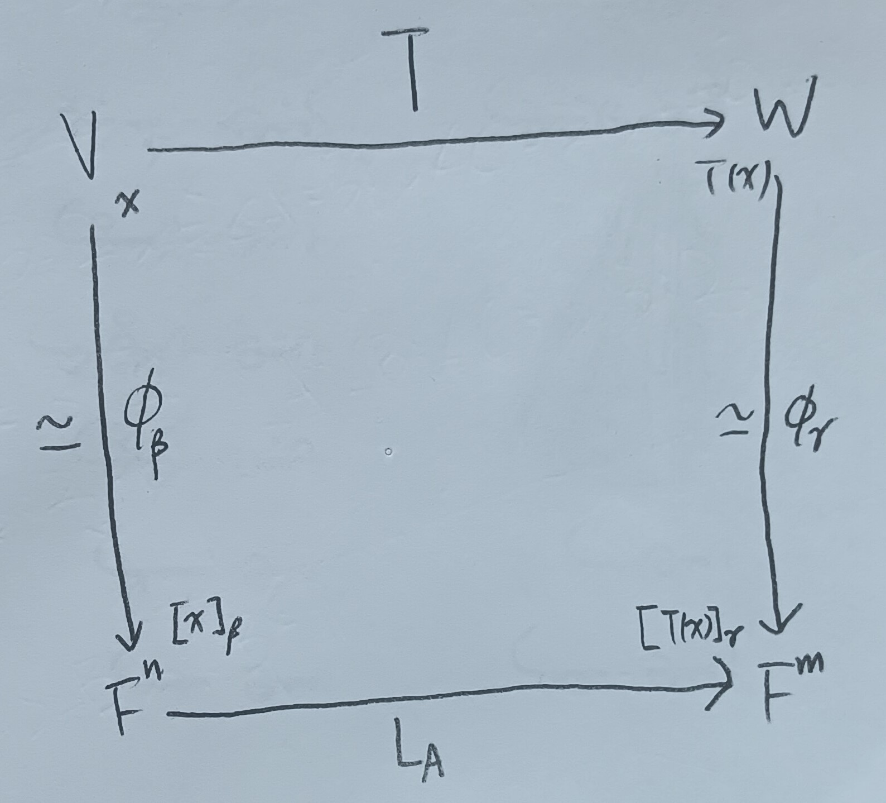

這份筆記是關於基本矩陣的定義與性質，以及其與其他矩陣的關係。
這裡的行與列依循的是台灣的翻譯習慣，即行對應到英文的Column，而列對應到英文的Row。
基本矩陣
定義 1：基本列運算 (Elementary Row Operation)
給定\(m\times n\)矩陣\(A\)，我們稱以下三種操作為基本列運算：
1. 將\(A\)的某兩列互換。
2.
將\(A\)的某一列乘以非零純量\(a\)。
3. 把\(A\)的某一列乘以\(a\)倍後加到另一列上。
定義 1-1：基本行運算 (Elementary Column Operation)
用和定義1類似的方法，可以定義基本行運算。
定義 2：基本矩陣 (Elementary Matrix)
我們稱\(I_n\)經過「一次」基本列運算後的矩陣稱為基本矩陣。
註記 2-1
由定義知基本矩陣必須是\(n\times n\)方陣。
定義 3：克羅內克Delta符號 (Kronecker's Delta Symbol)
我們記 \[ \delta_{ij}=\left\{ \begin{aligned} 0&,\mbox{ if }i\neq j\\ 1&,\mbox{ if }i=j \end{aligned} \right. \]
定理 4
給定\(A\in M_{m\times
n}(F)\)，並令\(B\)是\(A\)經過「一次」基本列運算後的矩陣，則存在\(m\times m\)基本矩陣\(E\)使得\(B=EA\)，且\(A\to
B\)和\(I_m\to
E\)經過了一樣的基本列運算。
證明：定義1中的1.和2.兩項列運算在這裡對應到的結論是顯然的，在這裡證明定義1中的第3.項列運算。
假設\(B\)是把\(A\)的第\(l\)行的\(c\neq
0\)倍加到第\(k\)行上的矩陣，則
\[
B_{ij}=\left\{
\begin{aligned}
A_{ij}&,\mbox{ if }i\neq k\\
A_{kj}+cA_{lj}&,\mbox{ if }i=k
\end{aligned}
\right.
\] 而把\(I_m\)的第\(l\)行的\(c\neq
0\)倍加到第\(k\)行上的基本矩陣\(E\)為 \[
E_{ij}=\left\{
\begin{aligned}
\delta_{ij}&,\mbox{ if }i\neq k\\
\delta_{kj}+c\delta_{lj}&,\mbox{ if }i=k
\end{aligned}
\right.
\] 則 \[
\begin{aligned}
(EA)_{ij}&=\sum_{s=1}^m E_{is}A_{sj}\\
&=\left\{
\begin{aligned}
\sum_{s=1}^m \delta_{is}A_{sj}&=A_{ij},\mbox{ if }i\neq k\\
\sum_{s=1}^m (\delta_{ks}+c\delta_{ls})A_{sj}&=A_{kj}+cA_{lj},\mbox{
if }i=k
\end{aligned}
\right.
\end{aligned}
\] 故\((EA)_{ij}=B_{ij}\)，即\(B=EA\)。QED
定理 4-1
基本矩陣\(E\)都是可逆的，且\(I_n\to E\)和\(E^{-1}\to
I_n\)經過了一樣的基本列運算。
證明：由定理4可以發現這個結論是顯然的，在此證略。QED
矩陣的秩
定義 5：矩陣的秩 (Rank of Matrices)
給定矩陣\(A\in M_{m\times n}(F)\)，我們將\(A\)的秩定義為 \[ \mbox{rank}(A)=\mbox{rank}(L_A) \]
註記 6
給定\(n\times n\)矩陣\(A\)，由這裡的定理3可知\(A\)可逆 iff. \(L_A\)可逆，且由這裡的性質1-6知 \[ \mbox{rank}(A)=\mbox{rank}(L_A)=\dim(F^n)=n \]
定理 7
給定線性映射\(T:V\to W\)，其中\(V,W\)為有限維向量空間，且\(\beta,\gamma\)分別為\(V,W\)的有序基底，則 \[ \mbox{rank}(T)=\mbox{rank}\left([T]^\gamma_\beta\right) \]
證明：令\(\dim V=n\), \(\dim W=m\)，並令\([T]^\gamma_\beta=A\)。我們希望說明\(\mbox{rank}(L_A)=\mbox{rank}(T)\)。令\(\phi_\beta:V\to F^n\)和\(\phi_\gamma:W\to F^m\)分別為同構映射(由這裡的註記2知這樣的同構映射存在)，我們考慮如下的圖2。
在上圖2中，我們有 \[
[T(x)]_\gamma=[T]_\beta^\gamma[x]_\beta=A[x]_\beta
\] 故\(L_A\phi_\beta=\phi_\gamma
T\)，即 \[
\phi_\gamma^{-1}L_A=T\phi_\beta^{-1}
\] 接著，我們希望說明\(\phi_\beta(N(T))=N(L_A)\)。我們分兩個部分說明：
1. 給定\(y\in\phi_\beta(N(T))\)，即\(y=\phi_\beta(x)\)，其中\(T(x)=0\)。則 \[
L_A(y)=L_A(\phi_\beta(x))=\phi_\gamma(T(x))=0
\] 故\(y\in N(L_A)\) i.e. \(\phi_\beta(N(T))\subseteq N(L_A)\)。
2.
給定\(y\in\phi_\beta^{-1}(N(L_A))\)，則\(y=\phi_\beta^{-1}(x)\)，其中\(L_A(x)=0\)。則 \[
T(y)=T\left(\phi_\beta^{-1}(x)\right)=\phi_\gamma^{-1}(L_A(x))=0
\] 即\(y\in N(T)\) i.e. \(\phi_\beta^{-1}(N(L_A))\subseteq N(T)\)
i.e. \(N(L_A)\subseteq
\phi_\beta(N(T))\)。
綜合以上，即有\(\phi_\beta(N(T))=N(L_A)\)。故由這裡的註記2知
\[
\dim(N(T))=\dim(\phi_\beta(N(T)))=\dim(N(L_A))
\] 故由維度定理(這裡的定理8)，我們即有\(\mbox{rank}(T)=\mbox{rank}(L_A)\)。QED
定理 8
給定\(m\times n\)矩陣\(A\)，並給定\(m\times m\)可逆矩陣\(P\)與\(n\times
n\)可逆矩陣\(Q\)。則：
1.
\(\mbox{rank}(AQ)=\mbox{rank}(A)\)。
2. \(\mbox{rank}(PA)=\mbox{rank}(A)\)。
3.
\(\mbox{rank}(PAQ)=\mbox{rank}(A)\)。
證明：第3.點可以由第1.、2.點直接推出，故這裡只證明前兩點。
1. 我們有 \[
R(L_{AQ})=R(L_AL_Q)=L_AL_Q(F^n)
\] 其中\(L_AL_Q(F^n)\)指的是把\(F^n\)塞進\(L_AL_Q\)這個函數裡。而又因為\(Q\)是同構映射，故\(L_Q(F^n)=F^n\)，則 \[
R(L_{AQ})=L_AL_Q(F^n)=L_A(F^n)=R(L_A)
\] 故\(\mbox{rank}(AQ)=\mbox{rank}(A)\)。
2.
我們有 \[
R(L_{PA})=R(L_PL_A)=L_PL_A(F^n)=L_P(R(L_A))
\] 然而又因為\(L_P\)是同構映射，故\(L_P(R(L_A))\simeq R(L_A)\)。故由這裡的註記2可知
\[
\dim(L_P(R(L_A)))=\dim(R(L_A))
\] 故\(\mbox{rank}(PA)=\mbox{rank}(A)\)。QED
註記 8-1
矩陣經過基本列運算後秩不變。(因為對應的基本矩陣是可逆的)
推論 8-2
若\(MA=I\)，則\(AM=I\)。
證明：由假設有\(AMA=A\)，即 \[ (I-AM)A=0 \] 而\(A\)可逆，故由定理8知 \[ \mbox{rank}((I-AM)A)=\mbox{rank}(I-AM)=0 \] 故\(\mbox{rank}(I-AM)\) i.e. \(AM=I\)。QED
定理 9
\(m\times
n\)矩陣的秩等於其線性獨立的行的最大數目，並且等於其所有行構成的向量空間的維度。
證明：給定\(A\in M_{m\times n}(F)\)，令\(F^n\)的標準有序基底為\(\beta\)，我們有 \[ \mbox{rank}(A)=\mbox{rank}(L_A)=\dim R(L_A)=\dim(\mbox{span}(L_A(\beta))) \] 由定義知\(L_A(\beta)\)即為\(A\)的每一行，故 \[ \mbox{rank}(A)=\dim(A\mbox{的行}) \] 而這又顯然會等於\(A\)彼此線性獨立的最大行數。QED
矩陣與基本列運算
定理 10
給定\(m\times n\)矩陣\(A\)，令\(\mbox{rank}(A)=r\)，則\(r\leq m\)且\(r\leq n\)。並且\(A\)經過有限次基本列運算和基本行運算後可以化成
\[
D=\left(
\begin{array}{c|c}
I_r & O_1\\
\hline
O_2 & O_3
\end{array}
\right)
\] 其中\(O_1,O_2,O_3\)為零矩陣(其所有元素皆為零)。意即當\(i\leq r\)時\(D_{ii}=1\)，而其餘時候\(D_{ij}=0\)。
證明：由定理9知\(r\leq m\), \(r\leq n\)是顯然的，在此只須證後半部分。
我們對\(m\)做數學歸納法。
1.
當\(m=1\)時，\(A\)是\(1\times
n\)矩陣，可以令 \[
A=(a_1,\cdots,a_n)
\] 這裡\(r\)只能是\(0\)或\(1\)，且\(r=0\)只在\(a_1=a_2=\cdots=a_n=0\)時發生。當\(r=1\)時，很容易可以透過基本行運算將\(A\)化為\((1,0,0,\cdots,0)\)。
2. 我們假設當\(m\leq k-1\)時定理成立。則給定\(m\times n\)矩陣\(A\)，我們可以假設\(n>1\)(如果\(n=1\)就回到類似1.的狀況了)，且可以假設\(A\)不是零矩陣(零矩陣已經是目標形式了，其中\(r=0\))。假設\(A_{ij}\neq
0\)，則用交換兩行/列的基本行/列運算把\(A_{ij}\)換到第一行第一列(見上定義1與定義1-1)，則我們將定義1中的三項基本列運算簡記為(1),
(2), (3)，則 \[
\begin{aligned}
A&\xrightarrow{\left(1\right)}\left(
\begin{array}{c|c}
A_{ij} & \ast\ast\ast\cdots\ast\\
\hline
\ast & \\
\ast & \\
\ast & \ast\\
\vdots & \\
\ast &
\end{array}
\right)\\
&\xrightarrow{\left(2\right)}\left(
\begin{array}{c|c}
1 & \ast\ast\ast\cdots\ast\\
\hline
\ast & \\
\ast & \\
\ast & \ast\\
\vdots & \\
\ast &
\end{array}
\right)\\
&\xrightarrow{\left(3\right)}\left(
\begin{array}{c|c}
1 & 000\cdots 0\\
\hline
0 & \\
0 & \\
0 & B'\\
\vdots & \\
0 &
\end{array}
\right)=B
\end{aligned}
\] 其中\(B'\)為一\((m-1)\times(n-1)\)矩陣。由註記8-1知\(\mbox{rank}(A)=\mbox{rank}(B)\)，而\(B\)中線性獨立的行數即是\(B'\)線性獨立的行數加一(加的是\(B\)的第一行\(\left(\begin{array}{c}
1\\
0\\
0\\
\vdots\\
0
\end{array}
\right)\))，即 \[
\mbox{rank}(A)=\mbox{rank}(B)=\mbox{rank}(B')+1
\] 由歸納假設，我們可以把\(B'\)用基本列運算與基本行運算化為 \[
D'=\left(
\begin{array}{cc}
I_{r-1} & O\\
O & O
\end{array}
\right)
\] 故\(A\)可以化為 \[
A\to D=\left(
\begin{array}{c|ccc}
1 & 0 & \cdots & 0\\
\hline
0 & I_{r-1} & \cdots & O\\
0 & \vdots & \ddots & \vdots \\
0 & O & \cdots & O
\end{array}
\right)=\left(
\begin{array}{cc}
I_r & O_1\\
O_2 & O_3
\end{array}
\right)
\]
故由數學歸納法可知定理對所有\(n\)都成立。QED
註記 10-1
給定\(m\times n\)矩陣\(A\)，令\(A\)經過基本列運算與基本行運算後化為 \[ D=\left( \begin{array}{cc} I_r & O_1\\ O_2 & O_3 \end{array} \right) \] 則由定理4知\(D\)可以寫為 \[ D=BAC \] 其中\(B,C\)為可逆矩陣。
推論 10-2
給定矩陣\(A\)，則 \[ \mbox{rank}(A)=\mbox{rank}(A^t) \]
證明：考慮\(A\)經由基本列運算與基本行運算後化為定理10形式的矩陣\(D\)，則由註記10-1知\(D\)可表為\(D=BAC\)，則 \[ D^t=C^tA^tB^t \] 而易知\(C^t\), \(B^t\)也可逆，故由定理8知 \[ \mbox{rank}(A^t)=\mbox{rank}(D^t)=r=\mbox{rank}(D)=\mbox{rank}(A) \] QED
推論 10-2-1
由推論10-2易知 \[ \begin{aligned} \mbox{rank}(A)&=\textcolor{red}{A\mbox{線性獨立的行數}}\\ &=\mbox{rank}(A^t)=A^t\mbox{線性獨立的行數}\\ &=\textcolor{red}{A\mbox{線性獨立的列數}} \end{aligned} \]
定理 11
給定線性映射\(T:V\to W\), \(U:W\to Z\)，其中\(V,W,Z\)為有限維向量空間。並給定矩陣\(A,B\)，其中矩陣乘法\(AB\)是有定義的，則：
1. \(\mbox{rank}(UT)\leq\mbox{rank}(U)\)
2.
\(\mbox{rank}(AB)\leq\mbox{rank}(A)\)
3. \(\mbox{rank}(AB)\leq\mbox{rank}(B)\)
4.
\(\mbox{rank}(UT)\leq\mbox{rank}(T)\)
證明：
1. 我們知道\(R(T)\)是\(W\)的子空間，故 \[
R(UT)=U(R(T))\subseteq U(W)=R(U)
\] 其中\(U(R(T))\)指的是 \[
U(R(T))=\{U(v):v\in R(T)\}
\] 故 \[
\mbox{rank}(UT)=\dim(R(UT))\leq\dim R(U)=\mbox{rank}(U)
\]
2. 由這裡的定理16，我們有
\[
\mbox{rank}(L_{AB})=\mbox{rank}(L_AL_B)
\] 故 \[
\begin{aligned}
\mbox{rank}(AB)&=\mbox{rank}(L_AB)\\
&=\mbox{rank}(L_AL_B)\\
&\leq\mbox{rank}(L_A)\mbox{ (上述第1.點)}\\
&=\mbox{rank}(A)
\end{aligned}
\]
3. 由推論10-2有 \[
\begin{aligned}
\mbox{rank}(AB)&=\mbox{rank}((AB)^t)\\
&=\mbox{rank}(B^tA^t)\\
&\leq\mbox{rank}(B^t)\mbox{ (上述的第2.點)}\\
&=\mbox{rank}(B)
\end{aligned}
\]
4. 令\(A'=[U]^\gamma_\beta\), \(B'=[T]^\beta_\alpha\)，其中\(\alpha,\beta,\gamma\)分別是\(V,W,Z\)的有序基底，則由這裡的定理7知
\[
A'B'=[UT]^\gamma_\alpha
\] 故 \[
\begin{aligned}
\mbox{rank}(UT)&=\mbox{rank}(A'B')\\
&\leq\mbox{rank}(B')\mbox{ (上述的第3.點)}\\
&=\mbox{rank}(T)
\end{aligned}
\] QED
註記 12
每個可逆矩陣都是有限多個基本矩陣的積。
證明：給定\(n\times n\)矩陣\(A\)，若\(A\)可逆，則由上註記6知\(\mbox{rank}(A)=n\)，故由定理10知存在矩陣\(B,C\)使得 \[ I_n=BAC \] 其中\(B,C\)都是基本矩陣的積，代表\(A\)化成\(I_n\)經過的基本列/行運算，可以知道\(B,C\)都是可逆的，則 \[ A=B^{-1}C^{-1} \] 而\(B^{-1}, C^{-1}\)都是有限多個基本矩陣的積。QED
增廣矩陣與反矩陣
定義 13：增廣矩陣 (Augmented Matrix)
給定\(m\times n\)矩陣\(A\)與\(n\times p\)矩陣\(B\)，則定義增廣矩陣為一\(m\times(n+p)\)矩陣，形如 \[ (A|B)=\left( \begin{array}{ccc|ccc} a_{11} & \cdots & a_{1n} & b_{11} & \cdots & b_{1p}\\ \vdots & \ddots & \vdots & \vdots & \ddots & \vdots\\ a_{m1} & \cdots & a_{mn} & b_{m1} & \cdots & b_{mp} \end{array} \right) \]
定理 14
若\(n\times n\)矩陣\(A\)可逆，則我們可以把\((A|I_n)\)經由基本列運算化為\((I_n|A^{-1})\)。
證明：令\(C=(A|I_n)\)為一\(n\times (2n)\)矩陣，則 \[ A^{-1}C=(A^{-1}A|A^{-1}I_n)=(I_n|A^{-1}) \] 又\(A^{-1}\)可逆，故由註記12知\(A^{-1}\)是多個基本矩陣的積，故可令 \[ A^{-1}=E_pE_{p-1}\cdots E_1 \] 其中\(E_1,E_2,\cdots,E_p\)為基本矩陣，則 \[ E_pE_{p-1}\cdots E_1(A|I_n)=(I_n|A^{-1}) \] QED
註記 14-1
反過來說，我們可以由\((A|I_n)\to (I_n|B)\)的列運算來求出\(A^{-1}\)。